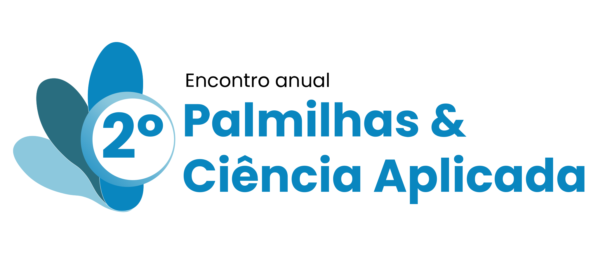

DIAS 8 E 9
DE SETEMBRO
DE SETEMBRO

| Horário | Atividade | Palestrante |
|---|---|---|
| 07:30 | Boas vindas e café | |
| 08:00 | Abertura e comunicação inicial | ANDRÉ MENDES, CLAYTON FUZETTI |
| 08:30 | WORKSHOP: Avaliação do foot core | CAROLINA LINS |
| 09:30 | WORKSHOP: Avaliação cinemática de marcha e corrida como ferramenta para prescrição de calçado e palmilha. | GUSTAVO LEME |
| 10:30 | ||
| 11:00 | WORKSHOP: Avaliação clínica dos pés de risco | ÉRICA QUEIROZ |
| 12:00 | ||
| 13:30 | WORKSHOP: Aplicando a neurociência moderna da dor na prática clínica | MATHEUS VIEIRA |
| 14:30 | WORKSHOP: Critérios para a prescrição de palmilhas em pacientes com dores crônicas | ANDRÉ MENDES |
| 15:30 | ||
| 16:00 | WORKSHOP: Aplicação de diferentes materiais para palmilhas | CLAYTON FUZETTI |
| 17:00 | WORKSHOP: Estudo de casos clínicos 1 | LUIZ FANTIN, MICHELLE SENA |
| 18:00 | ENCERRAMENTO |
| Horário | Atividade | Palestrante |
|---|---|---|
| 07:30 | Boas vindas e café | |
| 08:00 | Abertura e sorteio de brindes | CLAYTON FUZETTI |
| 08:30 | WORKSHOP: Por que não devemos temer as grandes franquias | ANDRÉ MENDES |
| 09:30 | WORKSHOP: Precificação de palmilhas e serviços | CLAYTON FUZETTI |
| 10:30 | ||
| 11:00 | WORKSHOP: Planejamento estratégico e inovação | ANDRÉ MENDES |
| 12:00 | ||
| 13:30 | WORKSHOP: Palmilhas para pés reumatóides | RAPHAEL VILELA |
| 14:30 | WORKSHOP: Prescrição de palmilhas para alterações ungueais e nas falange | CAROLINE STUBER |
| 15:00 | ||
| 16:00 | WORKSHOP: Palmilhas para neuromas de Morton | GABRIEL FRANKLIN |
| 17:00 | WORKSHOP: Estudo de casos clínicos 2 | ANDRÉ MENDES |
| 18:00 | ENCERRAMENTO E FOTO OFICIAL DO EVENTO |